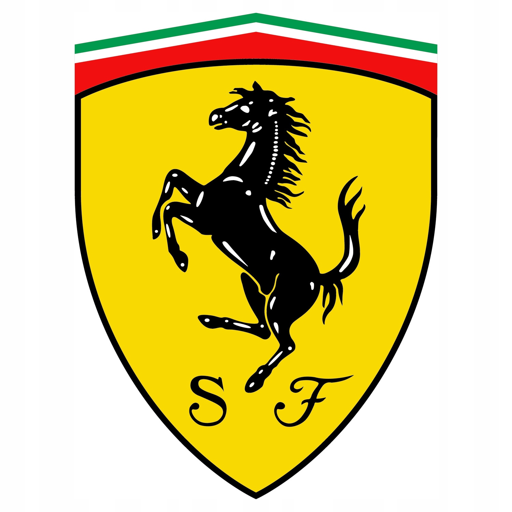

Peugeot 406
Samochód został po raz pierwszy zaprezentowany w 1995 roku jako następca modelu 405. Auto zbudowane zostało na tej samej płycie podłogowej co Citroën Xantia. W przeciwieństwie do Citroëna, auto pozbawione zostało hydropneumatycznego zawieszenia

Ferrari 458
Premiera pojazdu odbyła się w dniu 15 września 2009 na Frankfurt Motor Show 2009. Model ten jest następcą Ferrari F430. Nazwa modelu 458 tradycyjnie odwołuje się do rodzaju zastosowanego silnika – 4,5 l V8. Za stylistykę auta odpowiedzialne jest biuro Pininfariny.